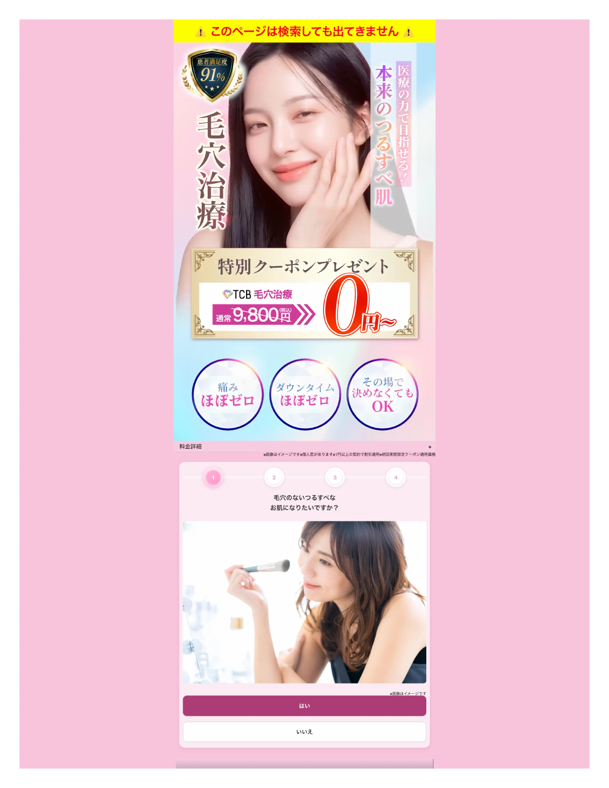
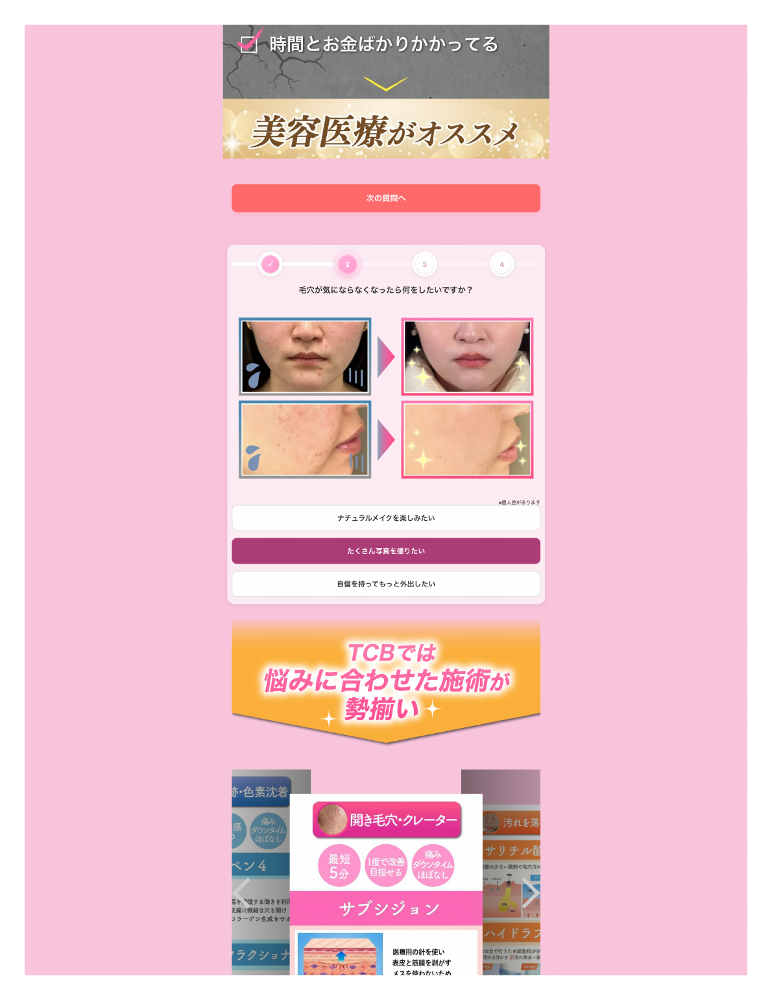
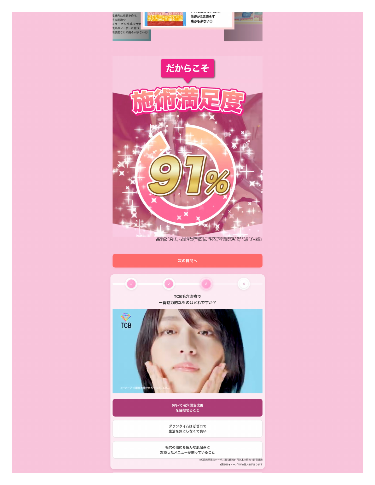
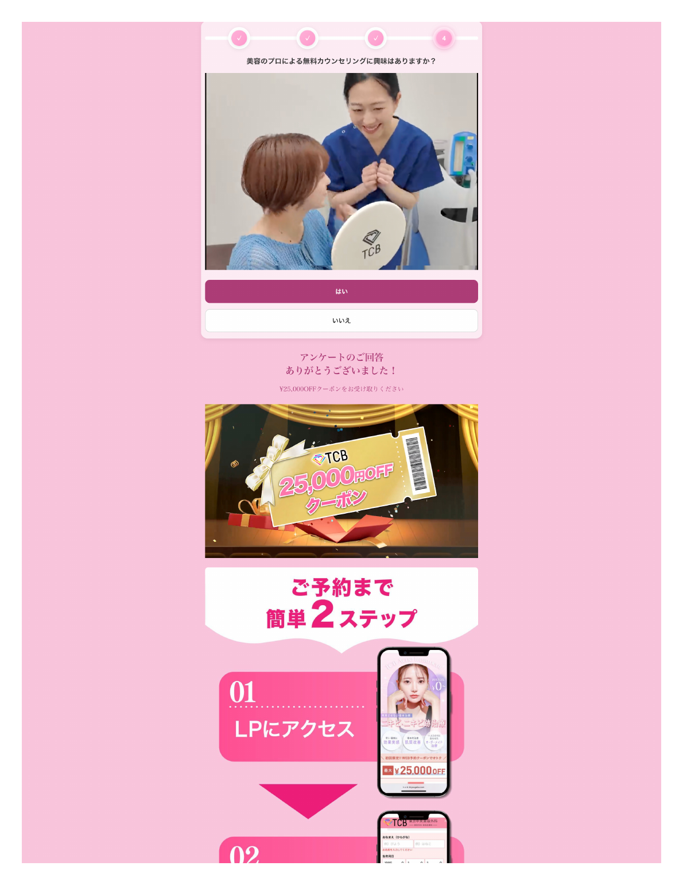
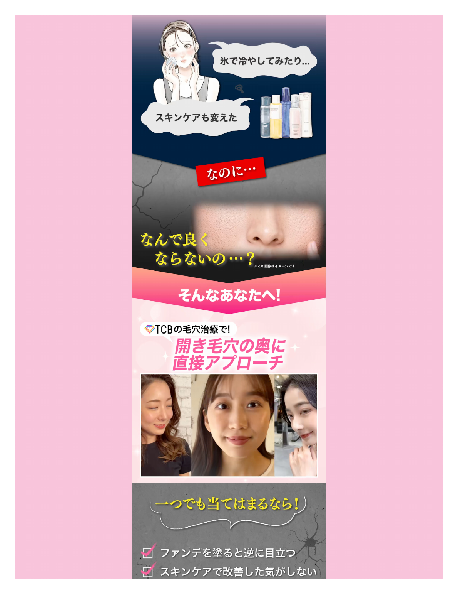
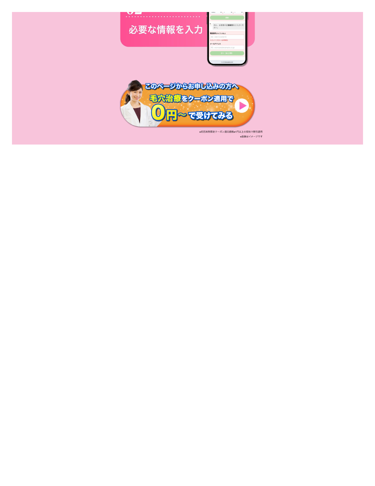

全体の考え方
ステップアンケで大事にしているのはテンポ感。 通常の記事LPにあるように「でも〇〇っていう懸念がありますよね」と途中でブレーキをかけるのではなく、 読者に考え込ませすぎず、直感的に答えられる問いから始める。
そのうえで、読者がこれまでやってきた努力を肯定し、共感を取り、 選択肢として医療を提示して、最後に背中を押す。 これがステップアンケだからできる役割だと考えている。
1. ファーストビューの意図

FVでは、限定感・理想肌・医療感・0円・不安払拭を同時に見せている。
「このページは検索しても出てきません」
一番上の「このページは検索しても出てきません」は重要な要素。 ユーザーに「これは検索しても出てこないページなんだ」 「広告クリエイティブの『詳しく見る』を押した自分だけが見られているものなんだ」と感じさせる。 最初に特別感と限定性を出す役割がある。
モデル選定
モデルはAI生成の女性だが、今っぽい韓国系の美女であること、かつナチュラルであることにこだわっている。 髪型はノーセット感のあるサラサラのストレートヘア。 メイクは薄づきで、厚塗りではない。
ターゲットは「厚塗りで肌をきれいに見せたい人」ではなく、 「すっぴんや洗顔後の自分の肌がきれいでありたい人」。 そのため、透明感があり、健康的で、すっぴんでもきれいな肌を想起させるモデルにこだわった。
「毛穴治療」という文言
「本来のつるすべ肌を目指せる」だけだと、下地やスキンケア商品でも言えてしまう。 そこで「治療」というワードを入れることで、これはスキンケアや下地ではなく医療のページだと伝えている。 下地やスキンケア広告とは差別化し、医療でしかできないつるすべ肌という印象を作っている。
FVで目立たせたい3要素
今回は「つるすべ肌」を主役にしすぎていない。 特に目立たせたいのは、モデルのきれいな肌、毛穴治療、0円の3つ。 この3つで「これは医療の話で、0円から受けられて、この肌を目指せるんだ」と一瞬で理解してもらう。
「その場で決めなくてもOK」
FV下部の「痛みほぼゼロ」「ダウンタイムほぼゼロ」「その場で決めなくてもOK」の中では、 特に「その場で決めなくてもOK」が強い。 「毛穴治療が0円から」は怪しく見える可能性がある。 そこで0円の近くにこの文言を置くことで、 「相談だけでもいいのか」「その場で高い契約を迫られるわけではないのか」と感じてもらいやすくなる。
0円訴求の近くにあるからこそ、怪しさを和らげ、次に進むハードルを下げる効果が出ている。
背景色と満足度
背景色はピンクと水色のオーロラ調。 20代の若年層にも、30代・40代にも見てもらいやすく、見る層を限定しすぎない。 オーソドックスで万人受けしやすい、きれいな色として使っている。
「満足度91%」も権威性・データの裏付けとして重要。 FV内で、見た目の理想像、医療感、価格メリット、不安払拭、データによる安心感をまとめて伝えている。
2. アンケート順番の意図
アンケートは「なりたい」から始まり、「なったら何したい」、 「TCBならできそう」、「相談してみてもいいかも」へ進む流れで設計している。
Q1: 毛穴のないツルスベなお肌になりたいですか？
こだわったのは「毛穴のない」だけでなく「ツルスベ」というワードを入れたこと。 女性向けのスキンケアや化粧品では、「うる艶」「ツルスベ」のような擬音・感覚語がよく使われていて、 実際に大きな力を持つと考えている。
「毛穴レスなお肌」という事実ベースの言い方だけでなく、 「ツルスベ」という感覚的な言葉を入れることで、読者が理想の肌をイメージしやすくなる。
1問目は、ほぼ全員が「はい」と答えるような問いにしている。 この記事に入ってきた時点で、毛穴のないツルスベ肌になりたいのはほぼ前提。 だからこそ、最初に置く意味がある。
1問目は、考え込ませる質問ではなく、0.1秒で押せる問いにすることが大事。 「何歳ですか」「女性ですか」くらいのレベルで、脳死で答えられる問いを置くことで、最初の回答ハードルを下げている。
Q2: 毛穴が気にならなくなったら何をしたいですか？

Q2では、改善後の未来とBefore/Afterの納得感を早めに見せる。
この質問の役割は、期待感を煽ること。 1問目で「ツルスベなお肌になりたい」と思わせたうえで、 「そうなったら何をしたい？」と聞くことで、読者に未来を想像させる。
読者は「あんなことしたいな」「こんなことしたいな」 「やっぱり私は毛穴のないツルスベ肌になりたいんだ」と、 ワクワクしながら自分の願望を再確認する。
Q3: TCB毛穴治療で一番魅力的なものはどれですか？

Q3では、TCBの良さを理解してもらったうえで選ばせる。
ここは少し教育要素を入れている。 読者に選択肢をちゃんと読んでもらい、 「へえ、そうなんだ」「TCBってこんなことができるんだ」と思ってもらいたい。
そのため、選択肢は短すぎる言葉ではなく、2行くらいの文章でしっかり作っている。 読者に少し時間をかけて読んでもらい、TCBの良さを理解してもらうための設問。
Q4: 美容のプロによる無料カウンセリングに興味はありますか？

Q4では、教育後の流れで無料カウンセリングへの興味を聞く。
Q3でTCBの良さを理解してもらったうえで、最後に無料カウンセリングへの興味を聞いている。 教育なしでいきなり聞くのではなく、Q3で「へえ、いいじゃん」と思った流れのままQ4に進むことで、 「はい」を押してもらいやすくしている。
3. 教育パートの意図

最初の教育パートでは、読者の努力と悩みを代弁して共感を取る。
読者の心の中を代弁する
1問目を押したあとに出てくる「氷で冷やしてみたり」「スキンケアも変えた」 「なのに、なんで良くならないの？」という流れは、かなりこだわった部分。
開き毛穴に悩んでいる人が行う対策として、 「氷で冷やす」「スキンケアを変える」は代表的な行動。 だからこそ、このパートでは読者が実際にやってきたことをそのまま出している。
狙いは、毛穴に悩んできた女性の心の中を代弁すること。 「氷で冷やした」「スキンケアも変えた」「なのに、なんで良くならないの？」 という読者の声を見せることで、「まさにそう」「私のことだ」「そうそう」と共感してもらう。
この共感は、できるだけ上部で取ることが大事。 離脱される前に読者を囲い込む必要があるため、最初の教育パートでは読者の気持ちを代弁することを最優先している。
「一つでも当てはまるなら」
ここでは、ファンデを塗ると逆に目立つ、スキンケアで改善した気がしない、 時間とお金ばかりかかっている、という3つの特徴を出している。
これは、単に「毛穴が開いていて見た目が嫌」という話で終わらせないため。 毛穴開きがあることで起きているネガティブなシーンを、 肌の状態だけでなく、時間・お金・日常の見た目にまで広げて書くことを意識している。
毛穴が開いている事実そのものがネガティブなのではなく、 それによって日常で起きている不満や損失がネガティブ。 「見た目が悪い」だけで終わらせず、もう一段深く踏み込んで、 日常全体にネガティブな影響が広がっていることを見せている。
施術メニュー紹介
「TCBでは悩みに合わせた施術が勢揃い」「メニューが複数ある」と見せるパートは、 情報量が多くても問題ないと考えている。
写真や文字が多くても、このパートで伝えたいのは、 「こんなにバリエーションが多いんだ」「悩みに合わせていろいろ選べるんだ」という事実。 細かい文章を全部読ませることよりも、施術の種類が豊富であることが伝わることを優先している。
4. 画像・デザインの意図
ネガティブとポジティブの差を強くつける
暗い背景やひび割れ背景を使っている理由は、ネガティブなシーンを一瞬でネガティブだと伝えるため。 記事を読む人は、基本的に文章を細かく読んでいない。 だから、文字を読まなくても「これは悩みのシーンなんだ」「これはポジティブなシーンなんだ」と分かるように、 色やエフェクトで意味を伝える必要がある。
ネガティブな場面では、暗い色・ひび割れ・重い雰囲気を使う。 ポジティブな場面では、明るい色・キラキラ・華やかな雰囲気を使う。 人は長年の経験で色や見た目から直感的に判断しているため、 その0.何秒の判断に合わせている。
やりすぎなくらい差をつけるのは、文字を読まない読者に対する配慮であり、こだわり。
Before / After画像
毛穴治療という題材なので、読者は「いろいろ言っているけど、実際どうなの？」と思う。 「実際の患者はどうなっているの？」という疑問が出るため、Before / After画像は必要。
言葉だけで効果を説明するのではなく、実際の変化が分かる画像を置くことで、読者の疑問に答えている。 また、Before / After画像はできるだけ早めに置くことを意識している。 前半から中盤に差しかかる手前で出すことで、読者が疑問を持ちすぎる前に答えを見せている。
ボタン色
CTAボタンはオレンジにしている。 以前、LPでは緑色のCTAボタンが多く、心理的に押しやすい色とされている一方で、 色覚の特性によっては認識しづらい場合がある、という話を見た。
一方で、オレンジは万人が認識しやすく、効果的という説を見たことがあり、今回はそれを試してみた。 背景がピンク系なので、オレンジを置くことで目立つという理由もある。 ただし、LP全体がオレンジ系のトンマナだった場合は、オレンジボタンにはしていない。
5. 予約導線・CTAの意図

最終CTAでは、0円・医療感・申し込み対象者の限定感をまとめて見せている。
予約ステップ画像
予約までの流れを見せるパートでは、いかに予約方法が簡単かを伝えることを重視している。 「簡単2ステップ」と見せることで、読者に「簡単そう」と感じてもらう。
隣にスマホ画面を置いていることにも意図がある。 読者が「何をすればいいのか」をビジュアルで理解できるようにしている。 予約前にデモンストレーションとして画面を見せることで、行動のイメージが湧きやすくなる。
クーポン画像
クーポン画像をチケット風・ゴールド風・プレゼントボックスから出てくるような見せ方にしている理由は、 プレゼント感とお得感を出すため。
「おめでとうございます」と出てきて嬉しいものは、ゴールド感やプレゼントボックスのような演出と相性がいい。 チケット型のクーポンは、実生活でも受け取るイメージがあり、分かりやすい。 金ピカのチケットがプレゼントボックスから飛び出すように見えることで、 「お得そう」「もらえて嬉しい」「特典を受け取った感じがある」という印象を作っている。
「0円〜で受けてみる」
「0円で今すぐ受ける」ではなく、「0円〜で受けてみる」という表現にしているのがこだわり。 人は疑似体験をしてから買いたい、試してみたい生き物だと考えている。 そのため、「受ける」と言い切るよりも、「受けてみる」「試してみる」の方がハードルが下がる。
「受けてみる」は、試食のような軽さがある。 気軽そうに見えるし、行動の心理的負担が少ない。 読者に気軽に申し込んでほしいため、この言葉遣いにしている。
医師・スタッフ風の人物
最終CTAに医師・スタッフ風の人物を置いている理由は、権威性を出すため。 FVのキラキラしたモデル画像を置く選択肢もあったが、 医師・スタッフ風の人物を置くことで、クリニック感が出る。
「ちゃんとお医者さんがいる」「医療機関なんだ」という印象を与えられる。 記事全体の美容感だけでなく、最後の申し込み部分ではクリニックとしての安心感や権威性を補っている。
補足: 毛穴訴求が売れた理由
今回の記事が売れた理由は、記事そのものの構成や見せ方だけではなく、 そもそも「ニキビ治療」を「毛穴治療」として訴求したことが大きいと考えている。
前提として、ニキビ治療案件はこれまで1年以上運用してきたが、ここまで売れたことはなかった。 そのため、今回売れた理由は、記事の出来だけではなく、今まで取れていなかった層を掘り当てたことが大きい可能性がある。
クリエイティブ担当者がこの仮説を立て、実際にそのクリエイティブが伸びた。 実際にはクレーターに近い肌状態でも、本人は「クレーター」とは思っていない。 そのため、「クレーター肌の方へ」と言われても、自分ごと化せずにスルーしてしまう。
一方で、「毛穴開き」「毛穴治療」と言われると、「あ、私のことだ」と反応しやすい。 この仮説に基づき、ステップアンケート記事も「毛穴治療」という名目で出したところ売れた。
つまり、今回の売れた理由には、 「今までニキビ治療・クレーター訴求では拾えていなかった層に、毛穴訴求で届いた」 というマクロな要因がある。
自社でも、他社の広告代理店でもまだ当てていなかった釣り堀に対して、 「毛穴治療」という餌を撒いたイメージ。 これまでスルーしていた人たち、特にクレーターをクレーターと認識していない人たちに対して、 「毛穴」という言葉を見せたことで反応を取れた。